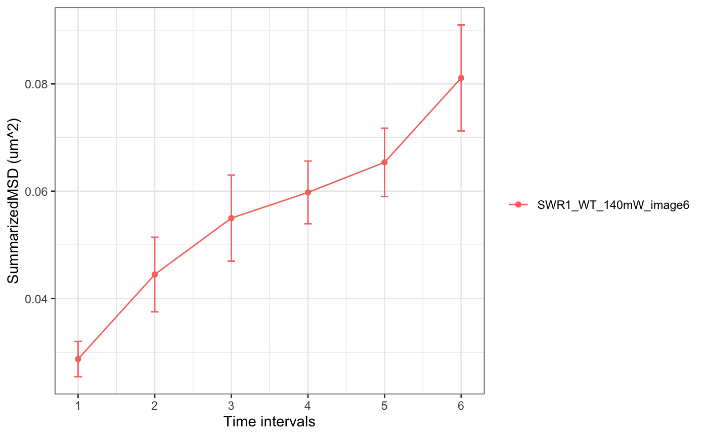

calculate mean square displacement for individual trajectory or summarize on trajectories.
msd(trackll,dt=6,resolution=0.107,summarize=FALSE,cores=1, plot=FALSE,output=FALSE,filter=c(min=7,max=Inf)) msd_track_vecdt(trackll,vecdt=NULL,resolution=0.107,output=FALSE) msd_perc(trackll,percentage=0.25,filter=c(min=7,max=Inf), trimmer=c(min=1,max=31),resolution=0.107,output=FALSE)
Arguments
| dt | Time intervals. Default 6. |
|---|---|
| resolution | ratio of pixel to uM. |
| trackll | a list of track lists. |
| summarize | An logical indicate if MSD should be calculated on individual trajectories (Default) or summarized on all trajectories. |
| filter | a vector specifies the minimum and max length of trajecotries to be analyzed. Take only trajectories that has number of frames greater than (>=) min and less than (<) max. |
| cores | Number of cores used for parallel computation. This can be the cores on a workstation, or on a cluster. Tip: the computation on each file will be parallel assigned to each CPU core. |
| plot | An logical indicate if plot should be generated. See Values for detail. |
| output | An logical indicate if output should be generated. See Values for detail. |
| vecdt | A list containing varying dt values. |
| percentage | compute msd based on (tierd) percentage of its total length. |
| trimmer | vector used for trimming via trimTrack() |
Value
SummarizedMSD MSD summarized over all trajectories as a function of dt.
InidvidualMSD MSD of individual trajectories at specified dt. Row number corresponding to its dt. Notice only the trajectories that satisfies the specified dt is output, trajectories that does not satisfy (i.e. trajectories satisfies 1:(dt-1)) is not output here.
StandardError Standard Error of the sample mean measures the variations of sample mean to underlying mean, it is estimated as SE=SD/sqrt(N).
SampleSize The sample size (number of tracks/trajectories) used for calculating the msd and standard error.
Trackll The msd function also returns the processed trackll. If passed to a variable, one can then export the trackll with this variable.
Details
msd() calculate track (/trajectory)'s mean square displacement as a function of time (dt). For a track of N steps, at each dt, there are N-dt number of sub-trajectory/sub-tracks, mean of dt-wise sub-trajectories/ step-wise sub tracks average subtracks into one number at each dt.
the dt number of su-btracks each contains N:N-dt steps. Because minimum step is 1 (N-dt > = 1), so the maxium dt is N-1 (dt < = N-1). As dt increase, the number of steps used to generate that mean decrease with the maxmum dt (dt=N-1) generated from one step.
if one wants to focus on a group of trajectory's evolution, he can simply filter on a number that is bigger than the dt he wanted to plot MSD.
by assinging cores, computation is paralelled on each each list of trackll (corresponding to one movie file).
Examples
# read in using track files folder=system.file("extdata","SWR1",package="sojourner") trackll=createTrackll(folder=folder, input=3)#> #> Reading ParticleTracker file: SWR1_WT_140mW_image6.csv ... #> #> mage6 read and processed. #> #> Process complete.#> applying filter, min 5 max Infmsd=msd(trackll.flt,dt=6,summarize=TRUE,plot=TRUE)#> applying filter, min 7 max Inf #> 45 tracks length > & = 1 45 tracks length > & = 2 45 tracks length > & = 3 45 tracks length > & = 4 45 tracks length > & = 5 45 tracks length > & = 6 #> #> ...str(msd)#> List of 1 #> $ SWR1_WT_140mW_image6_csv: num [1:6, 1:3] 0.0287 0.0445 0.055 0.0598 0.0654 ... #> ..- attr(*, "dimnames")=List of 2 #> .. ..$ : NULL #> .. ..$ : chr [1:3] "SummarizedMSD" "StandardError" "NumTracksAtDt"# focus on a group of trajectory by setting filter greater than dt trackll.flt2=filterTrack(trackll,filter=c(min=7,max=Inf))#> applying filter, min 7 max Infmsd2=msd(trackll.flt2,dt=6,summarize=TRUE,plot=TRUE)#> applying filter, min 7 max Inf #> 45 tracks length > & = 1 45 tracks length > & = 2 45 tracks length > & = 3 45 tracks length > & = 4 45 tracks length > & = 5 45 tracks length > & = 6 #> #> ...